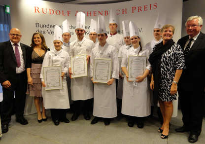

Bericht vom Rudolf Achenbachpreis Finale in Frankfurt

Robert Oppeneder Präsident des Verbandes der Köche Rede zum Rudolf Achenbach Preis 2012
Glückwünsche des Landesverbandsvorsitzenden Volker Egen
Mit 8 Teilnehmern in der Küche und 7 Teilnehmern im Service fand der
Wettbewerb am 8.März im IB-Stuttgart-Vaihingen statt.
1. Sieger Florian Ruß Koch im Bild-Links
2. Sieger Josa Leschner Koch im Bild-Rechts
3. Sieger Eileen Kleinert Köchen in Bild -Mitte
alle anderen Kollegen auf dem vierten Platz.
Kochverein Stuttgart 1890 e.V. | |||||
1 Timo Leder „Adler am Schloss“ Bönnigheim e Gebratenes Doradenfilet mit Kräutersaitlingen, Karottenbutter und Feldsalatrisotto e Zweierlei von der Entenbrust mit Orangenjus Mangoldgemüse und Kartoffelgnocchi e Schokoladen-Topfenknödel mit Zitrusfruchtsalat und Marzipaneis | 2 Claudio Buccocieri „Restaurant Hirsch“ Fellbach e Filet von der Dorade Royal auf der Haut gebraten mit Karotten-Kardamom-Tapanade marinierter Apfel und feinem Feldsalat e Rosa Entenbrust „Sous Vide“ mit Rosmarinjus, Rahmwirsing und Rotwein-Schalotten-Confit dazu Kartoffel-Pilz-Crêpe-Roulade e Limonen-Schmand-Schnittchen mit Mandelbiskuit, Gewürzorangen und Marzipaneis | 3 Lea Wilhelm „Speisemeisterei“ Stuttgart e Zweierlei von der Dorade mit Apfel und Feldsalat e Gebratene Entenbrust mit Portweinschalotten Selleriepürree, Karotten und Kräutersaitlingen e Limonencreme mit Orangen und Marzipanparfait | |||
4 Marc Obergfell „Hotel Lamm“ Ostfildern-Scharnhausen e Duo von der Dorade mit Apfel-Mangoldchutney umlegt mit Feldsalat e Zartrosa gebratene Entenbrust auf Orangensauce dazu gefülltes Wirsingsäckchen und Kartoffelplätzchen e Marzipantörtchen mit Limonencreme | 5 Florian Ruß „Hotel Bareis“ Baiersbronn e Auf der Haut gebratenes Doradenfilet mit Risotto und Kräutersaitlingen e Roulade und Brust von der Ente mit Thymianjus Sellerie, Schalottenraviolis e Limonenchiboust auf Marzipanbiskuit mit Schokolade und Orangen | 6 Kleinert Eileen „Linde“ Oberbohingen e Gedünstetes Filet vom Dorade auf Gemüse-Pilzrisotto mit Kräuteröl e Fächer von der Barbarie-Entenbrust mit Portweinjus auf Rahmwirsing im Püreerand und glacierte Apfelspalten e Marzipan-Grießsoufflée mit Limonen-Quarkmousse auf Orangensalat | |||
Benito Principe „Stumpenhof“ Plochingen e Doradefilet im Olivenöl gegart auf Pilzrisotto e Glacierte Entenbrust mit Wirsinggemüse und Kartoffel-Sellerie-Maultäschle e Limetten-Tiramisu mit Mandeleis | Josa Leschner „Speisenmeisterei“ Stuttgart e Gedämpfte Dorade mit Kräutersaitlingen und Feldsalat e Gebratene Entenbrust mit Rosenkohl und Mandelrisotto e Marzipanparfait mit Schokolade und Zitrusfruchtsalat | Vielen Dank an die jungen Köche für die Bereitschaft am Achenbachpokal–Stadt- Wettbewerb teilzunehmen. Vielen Dank an die Ausbilder für die Bereitschaft ihre Auszubildenden mit Rat und Zeit zu unterstützen. Vielen Dank an die Jury für ihre Bereitschaft hier mit Herz dabei zu sein. | |||
Sehr geehrte Gäste, | |||||
Warenkorb Pflichtbestandteile: Vorspeise Hauptgericht Dessert 3 St Doraden 300 Gr 4 St Entenbrust 300 Gr 200 Gr Marzipan, 2 St Limonen Wahlbestandteile: Mehl Typ450, Langkornreis, Rundkornreis, Weizengries, Feldsalat, Kräutersaitlinge, Kohlrabi, Sellerie, Karotten, Rosenkohl, Wirsing, Mangold, Kartoffeln Butter, Eier, Süße Sahne, Sauerrahm, Vollmilch, Speisequark , Zwiebeln/Schalotten, Küchenübliche Kräuter, Tomatenmark, Essige, Öle und Gewürze Semmelbrösel / ToastbrotRotwein/Weißwein, Portwein, Äpfel, Orangen, Mandeln gehobelt, Zartbitter-Kuvertüre, Blattgelatine | |||||
INTERGASTRA vom 11. bis 15.02.2012 startete in Stuttgart mit großem Engagemant
Kochverein-Stand in Halle 5
Der Kochverein Stuttgart war in Halle 5 mit einem eigenen Stand präsent und präsentierte dort auch den Verband der Köche Deutschlands. Der Kochverein beköstigte täglich ca. 200 Kolleginnen und Kollegen von den anderen Vereinigungen wie DBU, VSR, MVG, die am Stand des DEHOGAS vertreten sind. Auch die Aussteller der Plattenschau und des gedeckten Tisches wurden von uns mit Frühstück und Mittagessen versorgt.
Spannender Wettbewerb "Berufschulcup 2012"
Zum zweiten Male wird auf der Intergastra der Berufschulcup durchgeführt.
Die Mannschaften bestehend aus je einem Azubi im dritten und zweiten Ausbildungsjahr müssen zwei Dessert herstellen und anrichten.
Im Vorfeld musste eine Nährwertberechnung und eine Darstellung der Dessert eingereicht werden. Am Wettbewerbstag wird noch eine Speisekarte vorgestellt.
Ein Lehrer der Berufschule als Begleiter stellt die Berufschule vor.
1. Platz Johann-Georg-Doertenbach-Schule Calw
(Goldmedaille 1.Platz – Tageswertung am 14.02.2012)
Herr Timo Stölzel,
Frau Christina Frey
Herr Patrick Jung
Zusätzlich erhielt die Schule den Ehrenpreis des DEHOGA -Landesverbandes